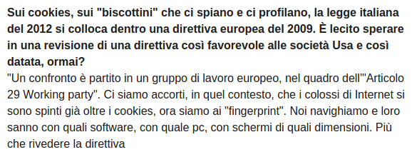
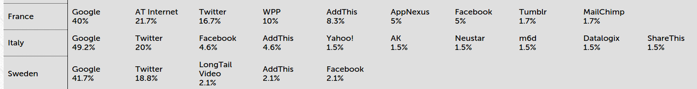
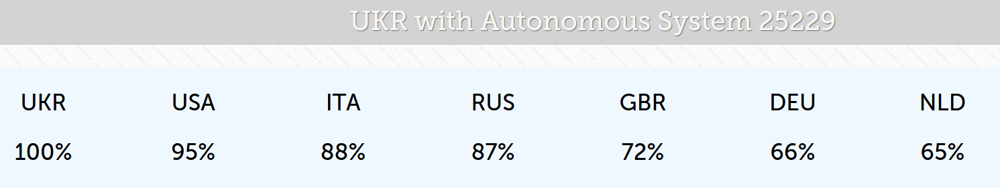
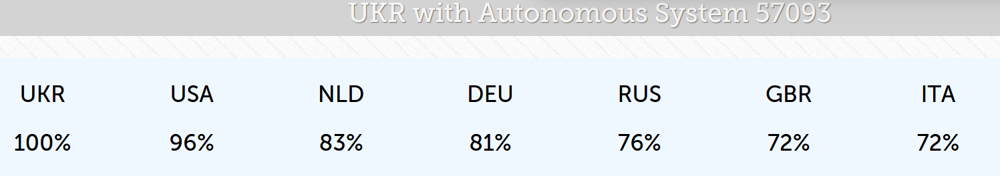
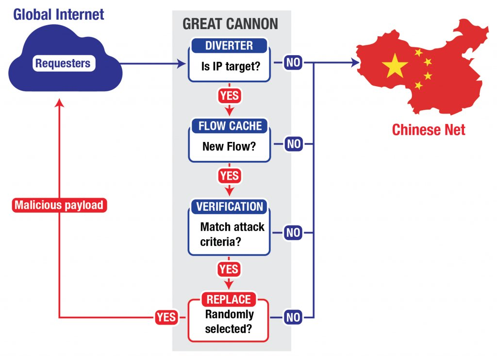

Geopolitica nella rete: le nazioni che hanno i nostri dati.
Trackography
/me
Name: Claudio Agosti - claudio@tacticaltech.org
da 15 anni dedicato a sicurezza informatica e programmazione; declinate nella protezione dei diritti umani in rete.
Terze parti
Contenuti primari come notizie e video, secondari come pubblicità, o invisibili, vengono essere trasmessi da sorgenti diverse. La pagina si compone di queste fonti, che possono cambiare durante la navigazione. Ad ogni connessione, poche informazioni vanno per ragioni tecnologiche ai server delle terze parti.
- Il sito contattato indica una pagina che definisce le sorgenti esterne: è chi contatti che ha la responsabilità.
- C'è chi è disposto a pagare per essere presente.
Perché lo fanno ?
- Comprare non solo la presenza, ma un piccolo spazio (advertising) ed essere intermediari
- Studiare trend e correlare dati provenienti da diverse sorgenti.
Scalabilità
- Proporzionale alla presenza.
- "fattoriale", e favorisce posizioni dominanti nel mercato.
Implicazioni
- Compagnie di cui non hai mai sentito parlare, sono parte della tua navigazione
- Indipendentemente dalla ragione ufficiale per la loro inclusione possono potenzialmente tenere traccia del comportamento degli utenti a lungo termin
- Infrastrutture al di fuori della tua nazione vengono utilizzare per popolare una pagina web (o un'app) che ti viene fornita da un'azienda nazionale.
- Media (or altri fornitori di contenuti) sono incentivati a farlo, perchè questo porta loro incassi o altri benefici (interazione con i social, statistiche, efficenza)

Approfondimenti
- TheGuardian, Why we are resigned to giving our data to corporate spies.
- Il miglior documentario interattivo sul tema Do not Track.
- Ethan Zukerman "The Internet's Origianl sin" (Agosto 2014)
- In italiano, mia prima presentazione dell'analisi al Festival del Giornalismo (Aprile 2014) (versione embrionale di Trackography)
Metodologia
- Si emula il comportamento di un browser verso un gruppo di siti (scelti + nazione scelta)
- Per ogni connessione al di fuori di quella intesa, si analizza dove termina, se c'è una compagnia riconosciuta (quando vedi youtube.com incluso, associare il nome "Google")
- Per ogni connessione al di fuori di quella intesa, si mappano gli Internet Service Provider che ci permettono di raggiungere la risorsa
- In teoria il consenso dovrebbe far avviare le connessioni alle terze parti dopo l'accettazione. Ma ci possono essere ragioni tecniche per permetterlo. Se una terza parte viene inclusa prima che il consenso venga espresso, anche se non sta inviando un cookie, il tracciamento può avere inizio.
Un breve estratto da questa intervista al Presidente AGDP.
Ma lo scopo di questo progetto è poter fare analisi di trend, comparazioni tra agenti traccianti e fare analisi delle infrastrutture.
Le immagini mostreranno alcune ricerche in corso. NON sono un'analisi scientificamente accurata.
L'esperimento di oggi, moltiplicare i dati di AGCOM tratti da L'indagine sull’informazione e internet in Italia, ma è fatto con una metodologia stabile. I suoi risultati non sono di carattere scientifico, pertanto NON DOVREBBERO ESSERE CONSIDERATE NEWS ATTENDIBILI.
Prima e dopo il favore istituzionale che è stato fatto alle compagnie di tracking
c.d. "cookie law"Il fattore esposizione
Se consideriamo:
- I lettori italiani come una comunità
- Una comunità viene indebolita se, qualcuno di esterno, li può conoscere senza far parte della loro rete
Possiamo misurare l'indebolimento sociale che porta ogni media ?
Ho moltiplicato i dati raccolti con l'ultimo test, con il rapporto di AGCOM sull'utilizzo degli online news media
In dettaglio, prima e dopo la direttiva sui cookie
Nota
- Non si parla di cookie. Si parla di Terze parti presenti. Le ragioni per avere una terza parte inclusa sono maggiori di quelle che giustificano un cookie.
- La mia analisi non tiene conto dei cookie. [ Lo potrebbe fare, ma ritengo più lungimirante dedicarsi a capire cosa fanno le terze parti, indipendentemente dal motivo per cui sono incluse o da quello che dichiarano ]
Ricerca Europea
Ancora da essere rilasciata, da parte dell'Università di Amsterdam, su tutti i siti istituzionali Europei. quanto sono presenti elementi traccianti ? quali sono ?
Qui una parziale visualizzazione: http://213.108.108.94:8000/companiespresence. Perchè pensarci ?
- Per se stessi: Le aziende di profilazione sono strumenti di sorveglianza dedicati al business. Saranno sempre avanti rispetto al sistema legale a nostra tutela. Sono grado di generare dati personali con alta attendibilità. La promozione di un'ideologia, l'utilizzo per spearphishing o per la profilazione comportamentale parte da qui.
- Per le reti di cui si è parte: Possiamo tutelarci, ma rimaniamo una minoranza all'interno di una società indebolita.
Ipotesi
Avere utenti esteri che raggiungono un servizio è una risorsa d'intelligence per lo stato che sta servendo il contenuto.
Le nazioni si dividono in due categorie
- Quelle in cui termina la connessione
- Quelle che la fanno transitare
E questo come impatta in Italia ?
A seconda dell'ISP, alcune rotte sono più dirette di altre.
Quindi l'esposizione totale alla quale un utente è soggetto non dipende solo dal servizio in analisi...
nell'ordine: KPNQwest, TISparkle, InfostradaDifferenze tra passarci attraverso e terminare la connessione
- La profilazione dell'utente richiede stato e perfetta conoscenza del comportamento (solo nazioni in Rosso).
- Le connessioni HTTPS terminano su un tuo server (solo nazioni in Rosso)
- Ogni connessione che passa su una nazione rossa o viola, può essere dirottata ed usata contro l'utent!
Entrambi possono conservare l'informazione a terpo indefinito, le data retention policy sono comunicate molto di rado, e sono comunque unilaterali.
E si applicano solo a dati non elaboratiUkraina
 Test effettuati da due provider differenti, danno risultati differenti chi ha più Infrastrutture ?

o il recente "China greatcannon ?"
O, sempre da Snowden: NSA QUANTUM.
E la propaganda associata: The Wall Street Journal suggests Snowden gave China an incredibly powerful cyberweapon .Guarda la Mappa dei cavi sottomarini intercettati da NSA e GCHQ.
AdBlock+, Ghostery, Disconnect
Attualmente alcuni add-ons hanno raggiunto una certa popolarità
- Sono basati su meccanismi di whitelist/blacklist che riconoscono la terza parte.
- Cercano, dove possibile, di differenziare tra adveritising, tracking, analytics, statistiche, widget, social network.
- Considerando le percentuali d'adozione, sono già stati elaborati dei sistemi di individuazione del blocco e conseguente "suggerimento" all'utente.
- Il più noto AdBlocker ha iniziato a fare compromesso con una whitelist.
Quali dati possono avere le terze parti ?
- Cookie: Il più vecchio metodo di tracciamento
- Fingerprint del browser: Panoptclick + Client Identification Mechanism.
- Il contenuto della pagina che visiti: Specialmente se il servizio è anche un web crawler, o se la pagina è pubblica.
- Locazione Geografica: Anche in caso di IP anonimizzato
- Da dove sei arrivato: In certi casi (VICE on tracking + VICE on porn).
- Il tuo profilo Social: Solo se cel'hai e lo stai usando nello stesso browser (Facebook ?).
Una ristretta lista di ricerce sul tema (In inglese)
- Bruce Schneier Why Anonymous data sometime isn't.
- Toward Collective Behavior Prediction via Social Dimension Extraction
- Predicting Age and Gender in Online Social Networks
- Web page clustering using a self-organizing map of user navigation patterns
- Modeling and Predicting Behavioral Dynamics on the Web
- Mining web data to create online navigation recommendations
Abbiamo i dati: ci servono ricercatori!
Grazie dell'attenzione!
Domande ?
pub 3200R/0x94E7EF47 2014-08-05 [expires: 2015-08-30]
Key fingerprint = ABC2 7639 5EE3 3245 A0A1 3973 40E2 6C25 94E7 EF47
uid TrackMap project <trackmap@tacticaltech.org>
sub 3200R/0x504DEBDF 2014-08-05 [expires: 2015-08-30]
Twitter @trackography_
Trackography in Tactical Tech's Me & My Shadow
FAQ N.1: Non sono OTT
Spesso si confonde questo fenomeno di tracciamento con l'avere un profilo Google, Facebook, etc.
| OTT | Trackers |
|---|---|
| Accetti un ToS * | Non c'è accordo = non ti devono nulla |
| ToS;DR | Ranking Digital Rights** |
| Dati personali monitorati (G + AGDP) | Nessuna cessione di dati personali: ma algoritmi che li generano |
*: per quanto unilaterale, mai letto e non discutibile
**: ma si affidano a survey fatti alle compagnie
FAQ N.2: Performance
Tracking Protection in Firefox For Privacy and Performance
Per gli utenti è un costo di tempo e banda, oltre a quello umano, che non è (ancora ?) misurabile.
Problemi aperti
Una persona da sola, è insignificate nel grande disegno..
i Numeri parlano
e i medatada sono molto più veritieri di quello che comunichiamo arbitrariamente